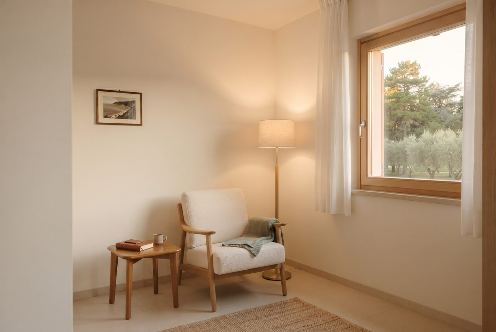
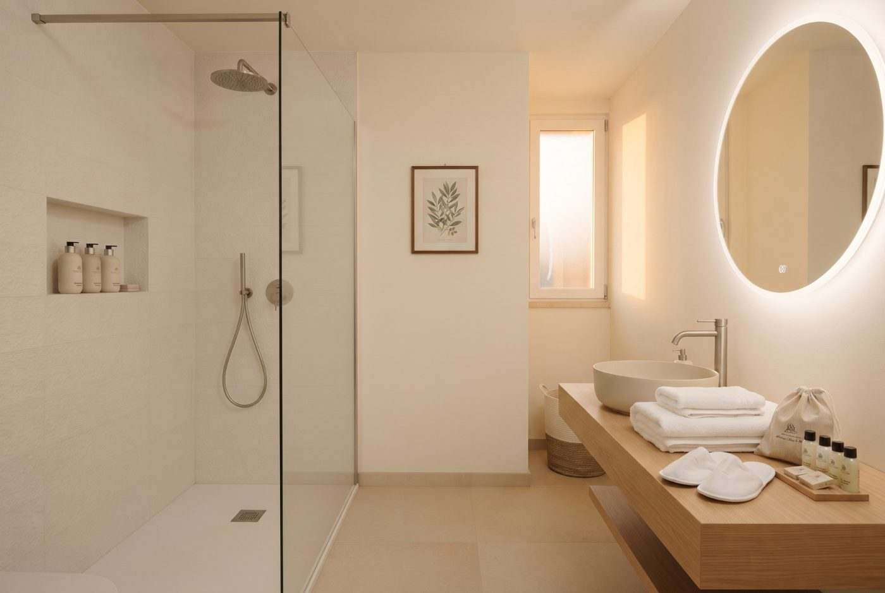

Angolo lettura con vista sul parco1 / 2Camera Standard
Camere sobrie e funzionali con vista sul parco, in una zona tranquilla dell’hotel oltre il giardino d’inverno. Alla spa si accede dalla reception. Ideali per un soggiorno breve a budget contenuto.
- Vista parco
- Zona tranquilla
- Doccia o vasca
- Accesso spa e kit benessere